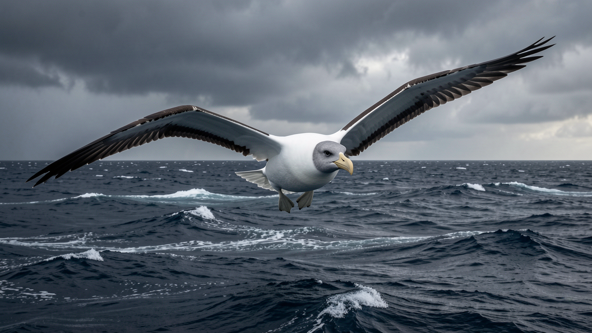

Scientific name: Diomedea exulans · Habitat: Southern Ocean, sub-Antarctic islands · Diet: Squid, fish, krill, crustaceans · Fun fact: The wandering albatross has the largest wingspan of any living bird — up to 3.5 metres. It can glide for thousands of kilometres without a single flap, using a technique called dynamic soaring to extract energy from wind gradients over the ocean.
Quick recall — do you remember these from Lesson 2?
rasping · RAS-ping · — "The puffin's tongue pressed fish against a rasping ridge."
colonial · kuh-LOH-nee-əl · — "Every spring, millions return to colonial burrows on the cliff face."
tidal · TYE-dəl · — "The puffin rode the tidal current offshore."
bobbing on the waves · — "Puffins sat bobbing on the waves like passengers waiting for a ferry."
clown of the sea · — "With its rainbow beak, the puffin earns its title as the clown of the sea."
| 🏟️ Sport: | The skier glided down the final stretch of the course, arms outstretched, barely touching her poles. |
| 🎵 Music: | The cellist drew the bow slowly, letting the note glide from one pitch to the next without any audible break. |
| 💼 Work: | She glided through the interview — calm, prepared, seemingly unbothered by the panel's hardest questions. |
| 🌊 Nature: | The mountain stream was so pellucid that we could count the pebbles on the riverbed from the bridge above. |
| 🔬 Science: | Astronomers described the atmosphere of the exoplanet as pellucid — without cloud or haze, ideal for surface observation. |
| 📝 Writing: | Her prose had a pellucid quality — every sentence carried light, nothing obscured the meaning. |
| 🎭 History: | The Pyramids are an enduring monument to the ambitions of a civilisation that vanished millennia ago. |
| ❤️ Personal: | What remained enduring from that friendship was not the shared meals or nights out, but the way he made her feel heard. |
| 💼 Work: | The company's enduring reputation for quality survived three leadership crises and a market collapse. |
| ❤️ Personal: | She had a wanderlust spirit that no stable job or city could satisfy — by twenty-five she had lived on four continents. |
| 💼 Work: | The startup's founding team had a wanderlust spirit — they coded from Bali, Lisbon, and Chiang Mai in the first year. |
| 💼 Work: | I'm feeling a bit under the weather today — nothing serious, just a headache and chills. I'll join the call from home. |
| 🎓 Education: | The professor was under the weather before the exam, but she refused to reschedule and delivered the lecture from her kitchen. |
Q1–Q3 are from Lesson 3. Q4–Q5 review Lesson 2. Click any answer — green = correct, red = wrong.
Q1 (Lesson 3). The dancer seemed to _____ across the stage — barely moving her feet, yet covering the full width without effort.
Q2 (Lesson 3). The manager's email was _____ in its clarity — no jargon, no ambiguity, just one direct instruction after another.
Q3 (Lesson 3). Despite the redesign, the brand's _____ appeal — that sense that it had always existed — was somehow preserved.
Q4 (Review — Lesson 2). The old door made a _____ sound when it opened — harsh, grating, as if the hinges hadn't been oiled in decades.
Q5 (Review — Lesson 2). The buoys were _____ near the harbour mouth, rising and falling with the swell in a slow, hypnotic rhythm.